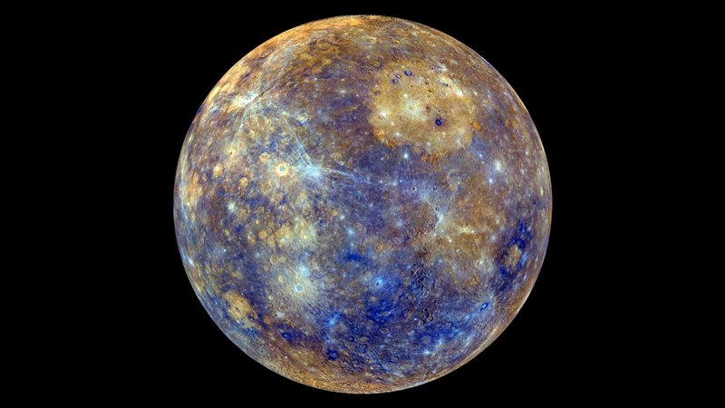
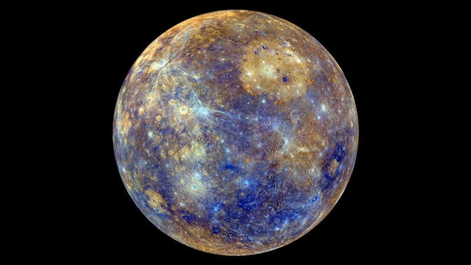

| planetas | |||
|---|---|---|---|
| mercurio  |
descripcion | tamanio | 720,00 |
| # de lunas | 2 | ||
| venus |
descripcion | tamanio | 108,209.475 |
| # de lunas | - | ||
| tierra
|
descripcion | tamanio | 149.598.622 |
| # de lunas | 1 | ||
| Marte
|
descripcion | tamanio | 227.493.824 |
| # de lunas | 2 | ||
| Jupiter
|
descripcion | tamanio | 778.340.821 |
| # de lunas | 79 | ||
| Saturno
|
descripcion | tamanio | 1.426.666.422 |
| # de lunas | 83 | ||
| Urano
|
descripcion | tamanio | 2.870.658.186 |
| # de lunas | 27 | ||
| neptuno
|
descripcion | tamanio | 4.498.396.441 |
| # de lunas | 14 | ||
Los planetas rocosos: Mercurio, Venus, La Tierra y Marte; y los gigantes gaseosos: Júpiter, Saturno, Urano y Neptuno, son los 8 mundos que componen el sistema solar. Os contamos todo lo que necesitáis saber sobre cada uno de ellos en este viaje por nuestro vecindario cósmico.

Mercurio, Venus, La Tierra y Marte; Júpiter, Saturno, Urano y Neptuno. Estos son los 8 planetas que forman parte del sistema solar.
Los cuatro primeros, Mercurio, Venus, La Tierra y Marte, tienen algo en común: todos se sitúan en las órbitas más cercanas al Sol, cuentan con un núcleo metálico en su interior y están conformados por materiales sólidos, por lo que reciben el nombre de planetas rocosos o planetas interirores
Por su parte las órbitas de Júpiter, Saturno, Urano y Neptuno se sitúan mucho más lejos del Sol , en la parte exterior del sistema solar, y están conformados en su mayoría por gas, por lo que son conocidos como planetas exteriores o planetas jovianos.
Antaño se consideró y se bautizó a estos 4 planetas como gigantes gaseosos, sin embargo, a día de hoy los astrónomos consideran que en nuestro sistema planetario solo 2 planetas atienden a esta a esta definición: Júpiter, el planeta mas grande del sistema solar, y Saturno, el planeta famoso por sus anillos. En el caso de Urano y Neptuno, que en el pasado se incluían en esta categoría, ahora son considerados como gigantes helados; la razón es que están constituidos principalmente por hielo, roca y gas
Pero más allá de las cualidades que puedan tener en común, cada uno de los planetas del sistema solar es un mundo único y presenta unas características muy particulares que lo diferencian de los demás. A continuación detallamos todo lo que necesitáis saber sobre cada uno de ellos.
Mercurio fue nombrado de esta manera en honor a Hermes, el mensajero de los dioses griegos del Olimpo. Más tarde los romanos lo bautizaron, tal y como ocurre con el resto de los planetas, con el equivalente en su mitología para los dioses griegos, en este caso Mercurio. Y con ese nombre ha llegado hasta nuestros días.
Con un tamaño tan solo un poco mayor al de nuestra luna, es el planeta más pequeño del sistema solar y el más cercano al Sol. Se trata del menor de los planetas rocosos del sistema solar y de manera similar a la Luna, presenta una superficie plagada de cráteres, en parte, debido a la finísima y casi ausente atmósfera (exosfera) que le rodea. Con una velocidad de 170.5030 kilómetros por hora, también se trata del planeta que viaja más rápido a través del espacio -de aquí su nombre- ya que la velocidad de un planeta incrementa con su cercanía a la estrella que orbita.
Por su proximidad al Sol, desde la superficie de Mercurio nuestro astro se vería 3 veces más grande que desde la Tierra, y su brillo sería hasta 7 veces superior. También cabría esperar que, por su cercanía al Sol, Mercurio fuera el planeta más caliente del sistema solar, sin embargo, contradiciendo la intuición, este honor es para el Venus, pues es en Venus que, debido a su densa atmósfera, se registran las temperaturas más altas de todo el sistema solar.
La ausencia práctica de atmósfera en Mercurio también propicia que las temperaturas en el mismo sean las más extremas del sistema solar, pudiéndose alcanzar durante el día los 430ºC y por la noche los -180ºC. También cabe decir que eje de rotación de Mercurio está inclinado apenas 2 grados con respecto al plano de su órbita alrededor del Sol. Eso significa que gira casi perfectamente en posición vertical y, por lo tanto, no experimenta estaciones.
| caracterizticas | venus |
|---|---|
| Distancia Orbital (km) | 108.209475 |
| Radio ecuatorial (km) | 6.051 |
| volumen (km3) | 928.4515.345.839 |
| Masa (kg) | 4.867.320 x 1018 |
| Densidad ((g/cm3) | 5243 |
| Gravedad en superficie (m/s2) | 8,87 |
| Velocidad de escape (km/h) | 37.296 |
| Duracion del dia | 116 dias y 18 horas terrestres |
| Duracion del anio | 225 dias terrestres |
| v-Velocidad de su orbita al rededor del sol (km/h) | 126.074 |
| COmposicion de la atmosfera (Exosfera) | Dioxido de carbono y nitrogeno |
| Lunas descubiertas | - |
Solo tras el Sol y la Luna, es el objeto más brillante que se puede ver en el firmamento desde la Tierra. Esto propició, ya desde la antigüedad, que por su brillo y belleza los romanos asociaran el planeta con la diosa de la belleza y el amor, Venus, de la cual recibe su nombre.
Parte de la intensidad del brillo de Venus es debido a la cercanía con la Tierra, ya que se trata del planeta que más próximo se encuentra de nosotros. También es el segundo planeta más cercano al Sol. Se trata de otro de los 4 planetas rocosos del sistema solar y debido a la gran similitud tanto en tamaño como en densidad con nuestro planeta, en ocasiones es denominado como el planeta gemelo de la Tierra.
No obstante, enus no es tan parecido a la Tierra como cabría esperar. Uno de los mejores ejemplos de ello es su atmósfera, muy espesa y rica en dióxido de carbono. De hecho, la atmósfera de Venus es tan densa que desde su superficie el Sol se vería como un tenue destello de luz. Esto, junto a las densas nubes de ácido sulfúrico que la rodean generan tal efecto invernadero que hace de Venus el planeta más caliente del sistema solar. Así la temperatura en Venus puede alcanzar los 475ºC, suficiente como para derretir el plomo, y la presión a nivel de superficie puede alcanzar las 90 atmósferas.
Otra gran diferencia con la Tierra y con el resto de planetas del sistema solar es que Venus gira sobre su eje al contrario que los demás, es decir, en el caso de Venus el Sol sale por el oeste y se pone por el este. Además su rotación es tremendamente lenta, ya que tarda 243 días en dar una vuelta sobre si mismo, lo que propicia que el año en Venus, el cual dura 225 días, sea mas corto que un día en el planeta.
Al igual que la Tierra, Venus posee un núcleo de hierro envuelto por un manto de roca caliente y una corteza rocosa. En cuanto a su superficie presenta un color oxidado y está salpicada de montañas y miles de grandes volcanes, algunos de los cuales los científicos creen que aún siguen activos.
| Caracteristicas | Planeta |
|---|---|
| nombre | Tierra |
| Distancia Orbital (Km) | 149.598.262 |
| Radio Ecuatorial (Km) | 6.371 |
| Volumen (km3) | 1.083.206.916.846 |
| Masa | 5.972.190 x 1018 |
| Densidad (g/cm3) | 5513 |
| Gravedad en superficie (m/s2) | 9,8 |
| Velocidad de escape (km/h) | 40.284 |
| Duración del día | 23 horas y 56 minutos |
| Duración del año | 365 días, 6 horas y 9,76 minutos |
| Velocidad de su órbita al rededor del sol(km/h) | 107.218 |
| Composición de la atmosfera (exosfera) | oxígeno y nitrógeno |
| Lunas descubiertas | 1 |
| Fuente | http... |
| Caracteristicas | Planeta |
|---|---|
| nombre | Marte |
| Distancia Orbital (Km) | 227.943.824 |
| Radio Ecuatorial (Km) | 3.389 |
| Volumen | 163.115.609.799 |
| Masa | 641.693 x1018 |
| Densidad (g/cm3) | 3.934 |
| Gravedad en superficie (m/s2) | 3,71 |
| Velocidad de escape (km/h) | 18.108 |
| Duración del día | 24 horas, 37 minutos |
| Duración del año | 687 días terrestrestd> |
| Velocidad de su órbita al rededor del sol(km/h) | 86.677 |
| Composición de la atmosfera (exosfera) | dióxido de carbono, nitrógeno y argón |
| Lunas descubiertas | 2 |
| Fuente | http... |
| Caracteristicas | Planeta |
|---|---|
| nombre | Jupiter |
| Distancia Orbital (Km) | 778.340.821 |
| Radio Ecuatorial (Km) | 69.911 |
| Volumen | 1.431.281.810.739.360 |
| Masa | 1.898.130 x1021 |
| Densidad (g/cm3) | 1326 |
| Gravedad en superficie (m/s2) | 24,79 |
| Velocidad de escape (km/h) | 216.72 |
| Duración del día | 9 horas, 56 minutos |
| Duración del año | 12 años terrestres |
| Velocidad de su órbita al rededor del sol(km/h) | 47.002 |
| Composición de la atmosfera (exosfera) | hidrogeno y helio |
| Lunas descubiertas | 79 |
| Fuente | http... |
| Caracteristicas | Planeta |
|---|---|
| nombre | Saturno |
| Distancia Orbital (Km) | 1.426.666.422 |
| Radio Ecuatorial (Km) | 58.238 |
| Volumen | 827.129.915.150.897td> |
| Masa | 568.319 x1021td> |
| Densidad (g/cm3) | 687 |
| Gravedad en superficie (m/s2) | 10,4 |
| Velocidad de escape (km/h) | 129.924 |
| Duración del día | 10 horas, 34 minutos |
| Duración del año | 29 años terrestres |
| Velocidad de su órbita al rededor del sol(km/h) | 129.924 |
| Composición de la atmosfera (exosfera) | hidrogeno y helio |
| Lunas descubiertas | 83 |
| Fuente | http... |
| Caracteristicas | Planeta |
|---|---|
| nombre | Urano |
| Distancia Orbital (Km) | 2.870.658.186 |
| Radio Ecuatorial (Km) | 25.362 |
| Volumen | 68.334.355.695.584td> |
| Masa | 86.810.300 x1018 |
| Densidad (g/cm3) | 1270 |
| Gravedad en superficie (m/s2) | 8,87 |
| Velocidad de escape (km/h) | 76.698 |
| Duración del día | 17 horas, 14 minutos |
| Duración del año | 84 años terrestres |
| Velocidad de su órbita al rededor del sol(km/h) | 24.477 |
| Composición de la atmosfera (exosfera) | hidrogeno, helio y metano |
| Lunas descubiertas | 27 |
| Fuente | http... |
El dios Urano fue en la mitología griega el dios del cielo. Sin embargo, cuando los griegos se referían al objeto
que brillaba en el cielo con este nombre, no se estaban refiriendo a un planeta, si no que creían que se trataba
de una estrella. Para constatar que Urano se trataba de un planeta hubo que esperar hasta el año 1781,
cuando fue descubierto por
Urano es el séptimo planeta en distancia al sol, el tercero más grande, el cuarto más masivo y el segundo menos denso del sistema solar. Se trata del primero de los gigantes helados de nuestro sistema planetario y está compuesto por una especie de "hielo" fluido de agua, amoníaco y metano. De hecho, el manto helado de Urano no está compuesto de hielo en el sentido convencional, sino que es un fluido caliente y denso formado por agua, amoníaco y otros volátiles.
Urano es un planeta muy diferente a todos los que hemos visto con anterioridad, aunque comparte una característica especialmente excepcional con el planeta Venus, y es que rota de oeste a este. Con la salvedad, eso si, algo que lo hace mucho más especial, de que gira en un ángulo de casi 90 grados desde el plano de su órbita, lo cual hace que Urano parezca girar de costado, orbitando alrededor del Sol como una bola rodante.
El gigante de hielo está rodeado por 13 anillos tenues, los cuales forman el segundo sistema anular que fue descubierto en el sistema solar tras el de Saturno. También cuenta con 27 satélites naturales conocidos, los cuales reciben su nombre en honor de los personajes de las obras de William Shakespeare y Alexander Pope.
| Caracteristicas | Planeta |
|---|---|
| nombre | Neptuno |
| Distancia Orbital (Km) | 4.498.396.441 |
| Radio Ecuatorial (Km) | 24.622 |
| Volumen | 62.525.703.987.412 |
| Masa | 102.412 x1021 |
| Densidad (g/cm3) | 1638 |
| Gravedad en superficie (m/s2) | 11,15 |
| Velocidad de escape (km/h) | 84.816 |
| Duración del día | 16 horas, 6 minutos |
| Duración del año | 165 años terrestres |
| Velocidad de su órbita al rededor del sol(km/h) | 19.566 |
| Composición de la atmosfera (exosfera) | hidrogeno, helio y metano |
| Lunas descubiertas | 14 |
| Fuente | http... |